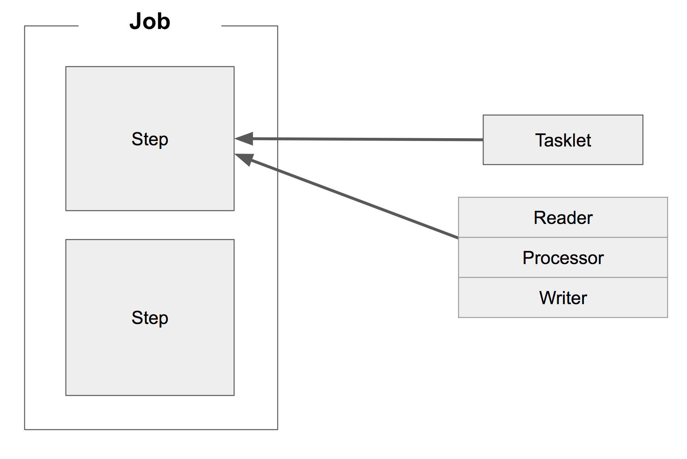
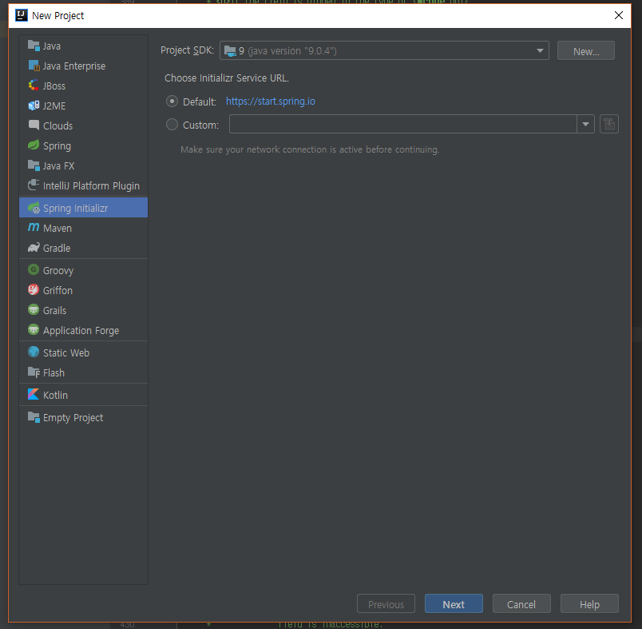
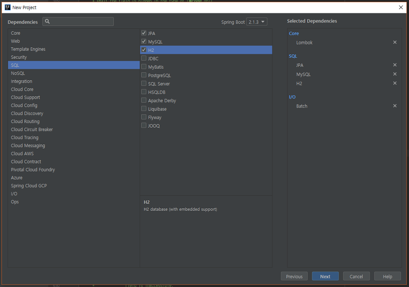
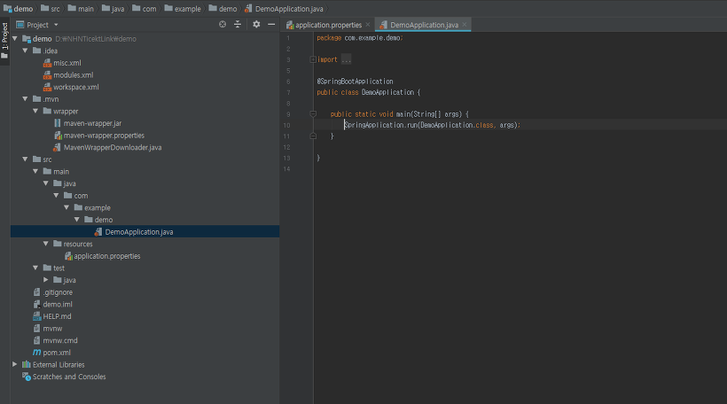
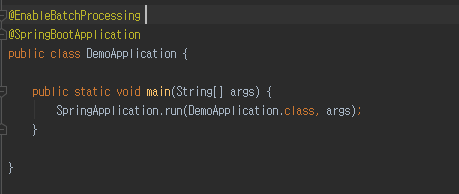
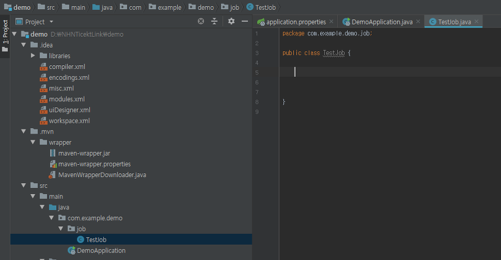
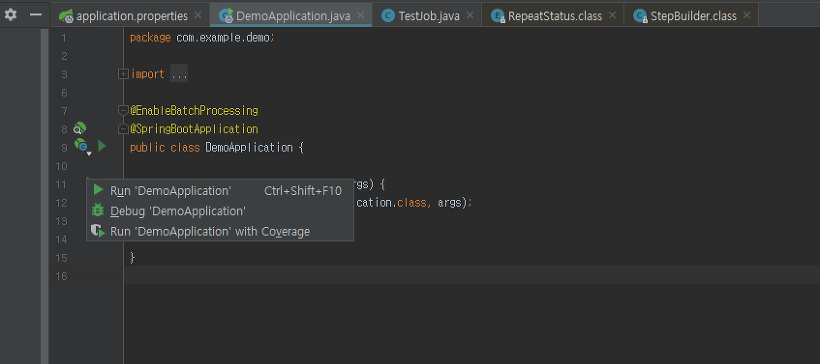
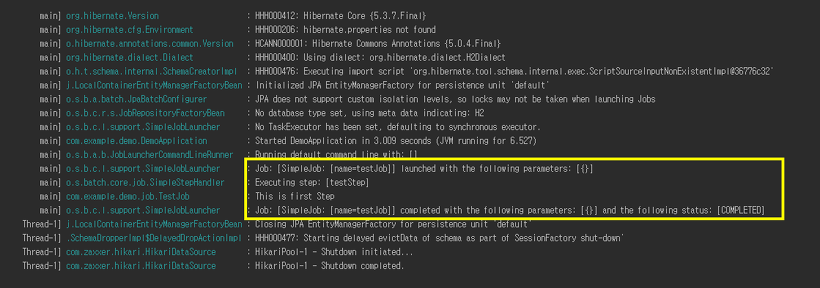

Spring Btach란
batch는 일괄처리의 뜻을 가지고 있다. Spring Batch는 Accenture와 Spring Source의 공동 작업으로 2007년에 탄생했는데 Accenture의 배치 노하우 & 기술력과 Spring 프레임워크가 합쳐져 만들어진 결과물이다.
간단히 말해, 스프링 배치란 실시간처리가 아니라 한번에 일괄처리 한다는 것을 의미한다. 한번에 처리할 대량의 내용(Job)을 등록해놓고 특정 시간에 그 job을 일괄 처리하며 작동하는 방식이라고 생각하면 편하다.
예를 들어 실시간으로 처리하기에 부하가 커서 하루의 데이터를 모았다가 새벽에 처리하거나 할 때 사용한다.
이런 Spring Batch는 Spring의 특성을 가지고 있어서 DI, AOP, 서비스 추상화 등 Spring 프레임워크의 3대 요소를 모두 사용할 수 있으면서, Accenture의 Batch 노하우가 담긴 아키텍처를 사용할 수 있다.

Spring Batch는 여러 Job으로 이루어져 있는대, 여기서 Job은 하나의 배치 작업 단위를 뜻한다. Job 안에는 아래처럼 여러 Step이 존재하고, Step 안에 Tasklet 혹은 Reader & Processor & Writer 묶음이 존재한다.
Spring Btach 만들기
step 1. Spring boot 프로젝트 선택
File-> New -> Project 에서 Spring Initializr(Spring boot)를 선택한다.

step 2. Spring 의존성 선택
스프링 의존성을 다음과 같이 선택한다. 다만 사용하는 SQL에 따라 선택하자.

step 3. 프로젝트 생성
앞의 두단계를 거치면 아래와 같이 DemoApplication이 생성되고 안에는 main 메소드가 나타난다.

step 4. 애노테이션 설정
Spring Batch를 사용하기 위해선 우선 배치 기능을 활성화 하기 위해 @EnableBatchProcessing 을 달아줘야 한다. 해당 애노테이션이 없을 경우 Spring Batch의 기능을 사용할 수 없으니 주의하자.

step 5. Job 클래스 만들기
이제 프로젝트도 만들었으니 Job을 생성해보자. TestJob 클래스를 생성한다.

step 6. Job 만들기
생성 해놓은 TestJob 클래스에 코드를 채워보자.
1 | // 로그 사용을 위한 lombok 애노테이션이다. |
step 6. Run
이제 Job을 만들었으니 DemoApplication을 실행시켜 보자. Run을 클릭한다.

step 7. 실행결과
이제 Console을 확인해보면 다음과 같이 ‘This is first Step’이 출력되는 것을 볼 수 있다.

출처
https://jojoldu.tistory.com/324
https://jojoldu.tistory.com/325